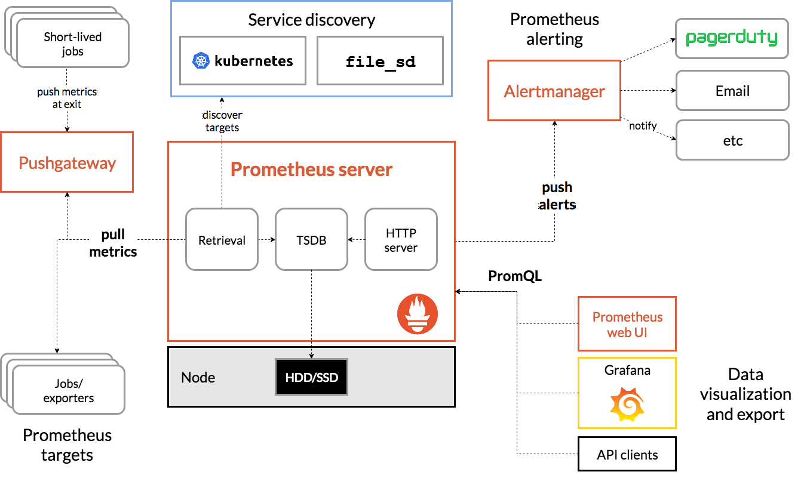
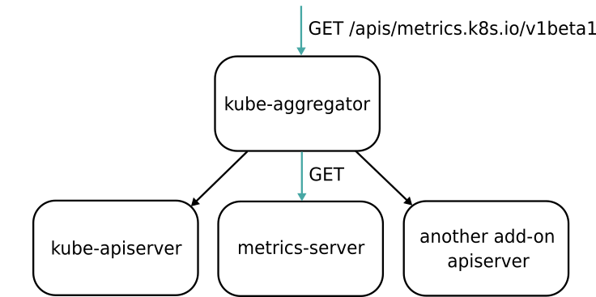

- 00 开篇词 打通“容器技术”的任督二脉.md
- 01 预习篇 · 小鲸鱼大事记（一）：初出茅庐.md
- 02 预习篇 · 小鲸鱼大事记（二）：崭露头角.md
- 03 预习篇 · 小鲸鱼大事记（三）：群雄并起.md
- 04 预习篇 · 小鲸鱼大事记（四）：尘埃落定.md
- 05 白话容器基础（一）：从进程说开去.md
- 06 白话容器基础（二）：隔离与限制.md
- 07 白话容器基础（三）：深入理解容器镜像.md
- 08 白话容器基础（四）：重新认识Docker容器.md
- 09 从容器到容器云：谈谈Kubernetes的本质.md
- 10 Kubernetes一键部署利器：kubeadm.md
- 11 从0到1：搭建一个完整的Kubernetes集群.md
- 12 牛刀小试：我的第一个容器化应用.md
- 13 为什么我们需要Pod？.md
- 14 深入解析Pod对象（一）：基本概念.md
- 15 深入解析Pod对象（二）：使用进阶.md
- 16 编排其实很简单：谈谈“控制器”模型.md
- 17 经典PaaS的记忆：作业副本与水平扩展.md
- 18 深入理解StatefulSet（一）：拓扑状态.md
- 19 深入理解StatefulSet（二）：存储状态.md
- 20 深入理解StatefulSet（三）：有状态应用实践.md
- 21 容器化守护进程的意义：DaemonSet.md
- 22 撬动离线业务：Job与CronJob.md
- 23 声明式API与Kubernetes编程范式.md
- 24 深入解析声明式API（一）：API对象的奥秘.md
- 25 深入解析声明式API（二）：编写自定义控制器.md
- 26 基于角色的权限控制：RBAC.md
- 27 聪明的微创新：Operator工作原理解读.md
- 28 PV、PVC、StorageClass，这些到底在说啥？.md
- 29 PV、PVC体系是不是多此一举？从本地持久化卷谈起.md
- 30 编写自己的存储插件：FlexVolume与CSI.md
- 31 容器存储实践：CSI插件编写指南.md
- 32 浅谈容器网络.md
- 33 深入解析容器跨主机网络.md
- 34 Kubernetes网络模型与CNI网络插件.md
- 35 解读Kubernetes三层网络方案.md
- 36 为什么说Kubernetes只有soft multi-tenancy？.md
- 37 找到容器不容易：Service、DNS与服务发现.md
- 38 从外界连通Service与Service调试“三板斧”.md
- 39 谈谈Service与Ingress.md
- 40 Kubernetes的资源模型与资源管理.md
- 41 十字路口上的Kubernetes默认调度器.md
- 42 Kubernetes默认调度器调度策略解析.md
- 43 Kubernetes默认调度器的优先级与抢占机制.md
- 44 Kubernetes GPU管理与Device Plugin机制.md
- 45 幕后英雄：SIG-Node与CRI.md
- 46 解读 CRI 与 容器运行时.md
- 47 绝不仅仅是安全：Kata Containers 与 gVisor.md
- 48 Prometheus、Metrics Server与Kubernetes监控体系.md
- 49 Custom Metrics_ 让Auto Scaling不再“食之无味”.md
- 50 让日志无处可逃：容器日志收集与管理.md
- 51 谈谈Kubernetes开源社区和未来走向.md
- 52 答疑：在问题中解决问题，在思考中产生思考.md
- 特别放送 2019 年，容器技术生态会发生些什么？.md
- 特别放送 基于 Kubernetes 的云原生应用管理，到底应该怎么做？.md
- 结束语 Kubernetes：赢开发者赢天下.md
48 Prometheus、Metrics Server与Kubernetes监控体系
你好，我是张磊。今天我和你分享的主题是：Prometheus、Metrics Server与Kubernetes监控体系。
通过前面的文章，我已经和你分享过了Kubernetes 的核心架构，编排概念，以及具体的设计与实现。接下来，我会用3篇文章，为你介绍 Kubernetes 监控相关的一些核心技术。
首先需要明确指出的是，Kubernetes 项目的监控体系曾经非常繁杂，在社区中也有很多方案。但这套体系发展到今天，已经完全演变成了以Prometheus 项目为核心的一套统一的方案。
在这里，可能有一些同学对 Prometheus 项目还太不熟悉。所以，我先来简单为你介绍一下这个项目。
实际上，Prometheus 项目是当年 CNCF 基金会起家时的“第二把交椅”。而这个项目发展到今天，已经全面接管了 Kubernetes 项目的整套监控体系。
比较有意思的是，Prometheus项目与 Kubernetes 项目一样，也来自于 Google 的 Borg 体系，它的原型系统，叫作BorgMon，是一个几乎与 Borg 同时诞生的内部监控系统。而 Prometheus 项目的发起原因也跟 Kubernetes 很类似，都是希望通过对用户更友好的方式，将 Google 内部系统的设计理念，传递给用户和开发者。
作为一个监控系统，Prometheus 项目的作用和工作方式，其实可以用如下所示的一张官方示意图来解释。

- 可以看到，Prometheus 项目工作的核心，是使用 Pull （抓取）的方式去搜集被监控对象的 Metrics 数据（监控指标数据），然后，再把这些数据保存在一个 TSDB （时间序列数据库，比如 OpenTSDB、InfluxDB 等）当中，以便后续可以按照时间进行检索。有了这套核心监控机制， Prometheus 剩下的组件就是用来配合这套机制的运行。比如 Pushgateway，可以允许被监控对象以Push 的方式向 Prometheus 推送 Metrics 数据。而Alertmanager，则可以根据 Metrics 信息灵活地设置报警。当然， Prometheus 最受用户欢迎的功能，还是通过 Grafana 对外暴露出的、可以灵活配置的监控数据可视化界面。
有了 Prometheus 之后，我们就可以按照Metrics 数据的来源，来对 Kubernetes 的监控体系做一个汇总了。
第一种 Metrics，是宿主机的监控数据。这部分数据的提供，需要借助一个由 Prometheus 维护的Node Exporter 工具。一般来说，Node Exporter 会以 DaemonSet 的方式运行在宿主机上。其实，所谓的 Exporter，就是代替被监控对象来对 Prometheus 暴露出可以被“抓取”的 Metrics 信息的一个辅助进程。
而 Node Exporter 可以暴露给 Prometheus 采集的Metrics 数据， 也不单单是节点的负载（Load）、CPU 、内存、磁盘以及网络这样的常规信息，它的 Metrics 指标可以说是“包罗万象”，你可以查看这个列表来感受一下。
第二种 Metrics，是来自于 Kubernetes 的 API Server、kubelet 等组件的/metrics API。除了常规的 CPU、内存的信息外，这部分信息还主要包括了各个组件的核心监控指标。比如，对于 API Server 来说，它就会在/metrics API 里，暴露出各个 Controller 的工作队列（Work Queue）的长度、请求的 QPS 和延迟数据等等。这些信息，是检查 Kubernetes 本身工作情况的主要依据。
第三种 Metrics，是 Kubernetes 相关的监控数据。这部分数据，一般叫作 Kubernetes 核心监控数据（core metrics）。这其中包括了 Pod、Node、容器、Service 等主要 Kubernetes 核心概念的 Metrics。
其中，容器相关的 Metrics 主要来自于 kubelet 内置的 cAdvisor 服务。在 kubelet 启动后，cAdvisor 服务也随之启动，而它能够提供的信息，可以细化到每一个容器的CPU 、文件系统、内存、网络等资源的使用情况。
需要注意的是，这里提到的 Kubernetes 核心监控数据，其实使用的是 Kubernetes 的一个非常重要的扩展能力，叫作 Metrics Server。
Metrics Server 在 Kubernetes 社区的定位，其实是用来取代 Heapster 这个项目的。在 Kubernetes 项目发展的初期，Heapster 是用户获取 Kubernetes 监控数据（比如 Pod 和 Node的资源使用情况） 的主要渠道。而后面提出来的 Metrics Server，则把这些信息，通过标准的 Kubernetes API 暴露了出来。这样，Metrics 信息就跟 Heapster 完成了解耦，允许 Heapster 项目慢慢退出舞台。
而有了 Metrics Server 之后，用户就可以通过标准的 Kubernetes API 来访问到这些监控数据了。比如，下面这个 URL：
http://127.0.0.1:8001/apis/metrics.k8s.io/v1beta1/namespaces/<namespace-name>/pods/<pod-name>
当你访问这个 Metrics API时，它就会为你返回一个 Pod 的监控数据，而这些数据，其实是从 kubelet 的 Summary API （即
需要指出的是， Metrics Server 并不是 kube-apiserver 的一部分，而是通过 Aggregator 这种插件机制，在独立部署的情况下同 kube-apiserver 一起统一对外服务的。
这里，Aggregator APIServer 的工作原理，可以用如下所示的一幅示意图来表示清楚：

备注：图片出处https://blog.jetstack.io/blog/resource-and-custom-metrics-hpa-v2/
可以看到，当Kubernetes 的 API Server 开启了 Aggregator 模式之后，你再访问apis/metrics.k8s.io/v1beta1的时候，实际上访问到的是一个叫作kube-aggregator 的代理。而kube-apiserver，正是这个代理的一个后端；而 Metrics Server，则是另一个后端。
而且，在这个机制下，你还可以添加更多的后端给这个 kube-aggregator。所以kube-aggregator其实就是一个根据 URL 选择具体的 API 后端的代理服务器。通过这种方式，我们就可以很方便地扩展 Kubernetes 的 API 了。
而 Aggregator 模式的开启也非常简单：
如果你是使用 kubeadm 或者官方的kube-up.sh 脚本部署Kubernetes集群的话，Aggregator 模式就是默认开启的；
如果是手动 DIY 搭建的话，你就需要在 kube-apiserver 的启动参数里加上如下所示的配置：
–requestheader-client-ca-file=
–requestheader-allowed-names=front-proxy-client –requestheader-extra-headers-prefix=X-Remote-Extra- –requestheader-group-headers=X-Remote-Group –requestheader-username-headers=X-Remote-User –proxy-client-cert-file= –proxy-client-key-file=
而这些配置的作用，主要就是为 Aggregator 这一层设置对应的 Key 和 Cert 文件。而这些文件的生成，就需要你自己手动完成了，具体流程请参考这篇官方文档。
Aggregator 功能开启之后，你只需要将 Metrics Server 的 YAML 文件部署起来，如下所示：
$ git clone https://github.com/kubernetes-incubator/metrics-server
$ cd metrics-server
$ kubectl create -f deploy/1.8+/
接下来，你就会看到metrics.k8s.io这个API 出现在了你的 Kubernetes API 列表当中。
在理解了Prometheus 关心的三种监控数据源，以及 Kubernetes 的核心 Metrics 之后，作为用户，你其实要做的就是将 Prometheus Operator 在 Kubernetes 集群里部署起来。然后，按照本篇文章一开始介绍的架构，把上述Metrics 源配置起来，让 Prometheus 自己去进行采集即可。
在后续的文章中，我会为你进一步剖析 Kubernetes 监控体系以及自定义Metrics （自定义监控指标）的具体技术点。
总结
在本篇文章中，我主要为你介绍了 Kubernetes 当前监控体系的设计，介绍了 Prometheus 项目在这套体系中的地位，讲解了以 Prometheus 为核心的监控系统的架构设计。
然后，我为你详细地解读了 Kubernetes 核心监控数据的来源，即：Metrics Server的具体工作原理，以及 Aggregator APIServer 的设计思路。
通过以上讲述，我希望你能够对 Kubernetes 的监控体系形成一个整体的认知，体会到 Kubernetes 社区在监控这个事情上，全面以 Prometheus 项目为核心进行建设的大方向。
最后，在具体的监控指标规划上，我建议你遵循业界通用的 USE 原则和 RED 原则。
其中，USE 原则指的是，按照如下三个维度来规划资源监控指标：
利用率（Utilization），资源被有效利用起来提供服务的平均时间占比；
饱和度（Saturation），资源拥挤的程度，比如工作队列的长度；
错误率（Errors），错误的数量。
而 RED 原则指的是，按照如下三个维度来规划服务监控指标：
每秒请求数量（Rate）；
每秒错误数量（Errors）；
服务响应时间（Duration）。
不难发现， USE 原则主要关注的是“资源”，比如节点和容器的资源使用情况，而 RED 原则主要关注的是“服务”，比如 kube-apiserver 或者某个应用的工作情况。这两种指标，在我今天为你讲解的 Kubernetes + Prometheus 组成的监控体系中，都是可以完全覆盖到的。
思考题
在监控体系中，对于数据的采集，其实既有 Prometheus 这种 Pull 模式，也有 Push 模式。请问，你如何看待这两种模式的异同和优缺点呢？
感谢你的收听，欢迎你给我留言，也欢迎分享给更多的朋友一起阅读。
© 2019 - 2023 Liangliang Lee. Powered by gin and hexo-theme-book.